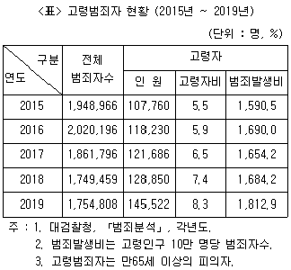
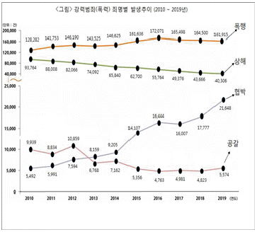
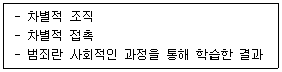
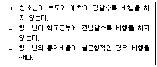

경비지도사-2차(범죄학) (2021-11-06 기출문제)
1. 범죄학에 관한 설명으로 옳지 않은 것은?
- 범죄행위와 사회의 반응에 관한 과학적 접근이다.
- 범죄를 사회적인 현상으로 간주하는 지식체계이다.
- 융합학문적인 성격을 가지고 있다.
- 범죄학에 관한 학자들 사이의 통일된 정의가 있다.
(정답률: 알수없음)

2. 범죄가 성립하는 법적 요건으로 옳지 않은 것은?
- 도덕성
- 구성요건 해당성
- 위법성
- 책임성
(정답률: 알수없음)
3. 공식범죄통계의 장점에 관한 설명으로 옳지 않은 것은?
- 범죄에 대한 대량관찰이 가능하다.
- 연도별 범죄 발생 추이를 알 수 있다.
- 지역별 범죄특징을 파악하기 쉽다.
- 숨은 범죄를 파악하는데 용이하다.
(정답률: 알수없음)
4. 자기보고식 조사에 관한 설명으로 옳지 않은 것은?
- 조사대상자가 자신이 저지른 범죄를 제대로 기억하지 못할 수 있다.
- 조사대상자가 자신의 범죄에 대한 왜곡된 보고를 할 수 있다.
- 단기간에 대규모의 자료수집이 가능하다.
- 특정 사건에 대한 깊이 있는 질적 자료수집이 가능하다.
(정답률: 30%)
5. 청소년 비행의 일반적 특징으로 옳지 않은 것은?
- 집단화 경향이 있다.
- 범죄의 동기는 충동적인 경우가 많다.
- 고연령화 경향이 있다.
- 흉포화 경향이 있다.
(정답률: 80%)
6. 합의론적 관점의 범죄에 관한 설명으로 옳은 것은?
- 대다수의 사람들이 동의한 사회의 일반적 가치에 반하는 행위이다.
- 사회구성원들이 부정적으로 낙인을 찍은 행위이다.
- 경제적 지배집단의 지위를 보호하기 위해 규정한 행위이다.
- 정치적 권력을 가진 사람들의 이해관계를 반영한 행위이다.
(정답률: 알수없음)
7. ｢2020 범죄백서｣에 따른 2015년에서 2019년까지의 고령자 범죄 발생추세로 옳지 않은 것은?

- 고령범죄자 수는 지속적으로 증가하고 있다.
- 전체 범죄자에서 고령범죄자가 차지하는 비율은 지속적으로 상승하고 있다.
- 고령범죄자 범죄발생비는 지속적으로 증가하고 있다.
- 2017년은 전년대비 전체 범죄자 수는 감소하였으나, 고령범죄자 수는 증가하였다.
(정답률: 알수없음)
8. 대중매체의 범죄억제기능에 해당하는 것은?
- 공익광고를 통해 범죄에 대한 경각심을 불러일으킬 수 있다.
- 잠재적 범죄자가 범죄수법을 학습하여 실제 범죄에 활용할 수 있다.
- 폭력적 장면의 반복적 시청은 폭력의 심각성에 둔감해지게 만들 수 있다.
- 선정적 장면의 반복적 시청은 왜곡된 성 관념을 갖게 할 수 있다.
(정답률: 80%)
9. 실험연구에 관한 설명으로 옳지 않은 것은?
- 연구자가 실험실의 환경을 제어할 수 있다.
- 반두라(A. Bandura)의 보보인형실험이 대표적이다.
- 범죄자의 일기와 편지 등을 분석대상으로 한다.
- 같은 실험을 반복할 수 있다.
(정답률: 80%)
10. 「2020 범죄백서」에서 제시한 강력범죄(폭력)의 추세에 관한 설명으로 옳지 않은 것은?

- 폭행 발생건수는 2010년에서 2019년까지 지속적으로 증가하는 추세이다.
- 상해 발생건수는 2010년에서 2019년까지 지속적으로 감소하는 추세이다.
- 2019년 공갈 발생건수는 2010년에 비해 감소하였다.
- 2019년 협박 발생건수는 2010년에 비해 증가하였다.
(정답률: 알수없음)
11. 다음과 관련 있는 범죄이론은?

- 통제균형이론
- 억제이론
- 발전이론
- 차별적 접촉이론
(정답률: 알수없음)
12. 허쉬(T. Hirschi)의 사회통제이론의 주장을 모두 고른 것은?

- ㄱ
- ㄱ, ㄴ
- ㄱ, ㄷ
- ㄴ, ㄷ
(정답률: 82%)
13. 낙인이론의 주요 개념이 아닌 것은?
- 일차적 일탈
- 주지위
- 모방
- 악의 극화
(정답률: 70%)
14. 사기범죄에 해당하는 것은?
- 타인의 재물을 몰래 훔치는 행위
- 상대방에게 폭력을 행사하여 재물을 빼앗는 행위
- 타인의 재물을 훼손하는 행위
- 사람을 속여서 재산상의 이익을 취득하는 행위
(정답률: 73%)
15. 초기 이탈리아의 실증주의 학파로서 범죄인을 자연범과 법정범으로 분류한 학자는?
- 롬브로조(C. Lombroso)
- 페리(E. Ferri)
- 가로팔로(R. Garofalo)
- 케틀레(L. Quetelet)
(정답률: 20%)
16. 크레취머(E. Kretschmer)의 범죄자 체형 분류에 해당하지 않는 것은?
- 세장형
- 근육형
- 비만형
- 외배엽형
(정답률: 80%)
17. 개인의 인지발달과 범죄의 관련성을 연구한 학자들로 묶인 것은?
- 피아제와 콜버그(Piaget & Kohlberg)
- 롬브로조와 타르드(Lombroso & Tarde)
- 쇼와 맥케이(Shaw & McKay)
- 샘슨과 라웁(Sampson & Laub)
(정답률: 알수없음)
18. 강도범죄에 관한 설명으로 옳은 것은?
- 순수한 재산형 범죄이다.
- 폭행 또는 협박을 수단으로 한다.
- 지인을 범행대상으로 삼지 않는다.
- 업무상 관계에서는 발생하지 않는다.
(정답률: 알수없음)
19. ｢아동ㆍ청소년의 성보호에 관한 법률｣상 사법경찰관리가 신분을 드러내지 않고 디지털 성범죄를 수사하는 기법은?
- 긴급수사
- 신분비공개수사
- 알리바이수사
- 초동수사
(정답률: 알수없음)
20. 홈즈와 드버거(Holmes & Deburger)의 연쇄살인범 유형 중 정신적 장애로 환청이나 환각상태에서 살인을 행하는 것은?
- 망상형
- 사명형
- 쾌락형
- 권력형
(정답률: 알수없음)
21. 화이트칼라범죄의 일반적 특성으로 옳지 않은 것은?
- 주로 전문적인 지식을 이용한다.
- 범죄피해가 일부 집단에 한정된다.
- 피해자가 피해사실을 모르는 경우가 많다.
- 범죄자의 죄의식이 부족한 경우가 많다.
(정답률: 알수없음)
22. 사이버범죄가 아닌 것은?
- 해킹
- 바이러스 유포
- 노트북 절도
- 인터넷 사기
(정답률: 70%)
23. 사회해체지역의 특성으로 옳지 않은 것은?
- 가치관의 혼란
- 높은 거주이동성
- 사회통제의 약화
- 주민결속력의 강화
(정답률: 60%)
24. 머튼(R. Merton)의 아노미이론에서 절도범의 사회적응양식에 해당하는 것은?
- 동조형
- 혁신형
- 도피형
- 의례형
(정답률: 알수없음)
25. 애그뉴(R. Agnew)의 일반긴장이론에서 주장하는 범죄의 원인에 해당하는 것은?
- 목표달성의 실패에 따른 스트레스
- 비행친구와의 접촉
- 사회유대의 약화
- 사회의 부정적 낙인
(정답률: 80%)
26. 발전이론에 해당되지 않는 것은?
- 손베리(T. Thornberry)의 상호작용이론
- 모피트(T. Moffitt)의 이원적 경로이론
- 코헨(A. Cohen)의 비행하위문화이론
- 샘슨과 라웁(Sampson ＆ Laub)의 연령 - 등급이론
(정답률: 30%)
27. 발전이론에 관한 내용으로 옳지 않은 것은?
- 범죄의 지속과 중단을 다양하게 설명한다.
- 시간이 흘러도 범죄의 원인은 동일하다.
- 생애과정을 통해 범죄의 변화가 나타난다.
- 연령에 따라 다른 요인이 범죄에 영향을 미친다.
(정답률: 알수없음)
28. 우리나라에서 금지약물이 아닌 것은?
- 코카인
- 메스암페타민
- 헤로인
- 카페인
(정답률: 알수없음)
29. 발전이론에서 주로 사용하는 연구방법은?
- 고전적인 실험
- 횡단적인 설문조사
- 집중적인 심층면접
- 종단적인 추적조사
(정답률: 알수없음)
30. 법에 관한 갈등론적 관점으로 옳은 것은?
- 누구에게나 평등하게 적용된다.
- 입법권한이 공정하게 분배된다.
- 지배계층의 이해관계가 주로 반영된다.
- 가치에 대한 합의를 전제로 한다.
(정답률: 알수없음)
31. 주관적 범죄예측과 비교할 때 통계적 범죄예측의 특징이 아닌 것은?
- 일반적으로 예측의 정확도가 높다.
- 실무적용시 전문지식이나 훈련이 많이 필요하지 않다.
- 향후의 정책을 위한 기초자료를 축적하는데 유리하다.
- 예측자의 개인적인 판단이 크게 작용할 수 있다.
(정답률: 알수없음)
32. 낙인이론에 따른 형사정책이 아닌 것은?
- 엄벌주의
- 비범죄화
- 비시설화
- 전환제도
(정답률: 알수없음)
33. 빈곤과 범죄와의 관계를 설명하는 이론에 해당되지 않는 것은?
- 머튼(R. Merton)의 아노미이론
- 클라우드와 올린(Cloward & Ohlin)의 차별적 기회이론
- 베카리아(C. Beccaria)의 억제이론
- 밀러(W. Miller)의 하층계급문화이론
(정답률: 알수없음)
34. 억제이론의 정책에 해당되는 것은?
- 대마초 흡입의 비범죄화
- 음주운전에 대한 처벌 강화
- 구금형의 사회 내 처우로의 전환
- 가석방 요건의 완화
(정답률: 90%)
35. 범죄의 2차 피해에 해당하지 않는 것은?
- 폭행피해를 당하여 병원에서 전치 3주의 진단을 받음
- 가정폭력 피해자가 수사관의 성희롱성 질문에 시달림
- 재판과정에서 강간피해자가 합의한 성관계가 아니었냐는 반복적인 심문에 시달림
- 사기피해자가 수사과정에서 노출된 개인정보로 인해 괴로움을 당함
(정답률: 73%)
36. 현행법상 형사조정제도와 같이, 임금체불 사기죄로 고소당한 고용주와 피해자를 불러 원만한 합의에 이르도록 하는 제도에 해당하는 것은?
- 피해자 - 가해자 중재제도
- 써클양형
- 가족집단회합
- 삼진아웃제
(정답률: 70%)
37. 윌슨과 켈링(Wilson & Kelling)의 깨진창이론에서 범죄유발 요인으로 옳지 않은 것은?
- 방치된 쓰레기더미
- 밝은 가로등
- 벽에 마구 그린 낙서
- 버려진 자동차들
(정답률: 80%)
38. 상점절도로 소년법원에 보내진 만13세 소년에게 ｢소년법｣상 부과할 수 없는 처분은?
- 수강명령
- 단기 보호관찰
- 보호자에게 위탁
- 소년교도소 구금
(정답률: 알수없음)
39. 교정처우 중 시설 내 처우에 해당하는 것은?
- 전자발찌를 착용한 대상자에 대한 위치추적 감시
- 보호관찰소의 안전운전프로그램 운영
- 자치규칙에 따른 수형자의 교도소생활
- 보호관찰관이 보호관찰 대상자를 주기적으로 면담
(정답률: 82%)
40. 절도예방을 위해 자전거에 일련번호를 새겨서 경찰서에 등록하는 프로그램에 해당하는 것은?
- 접근통제
- 재물표시
- 양심에 호소
- 자연적 감시
(정답률: 알수없음)